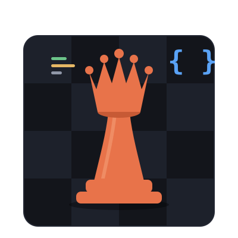
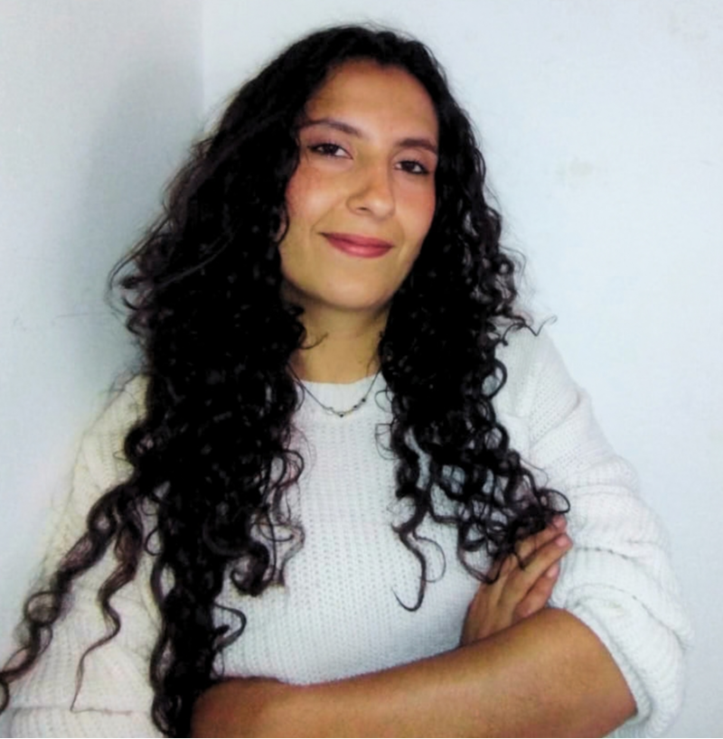
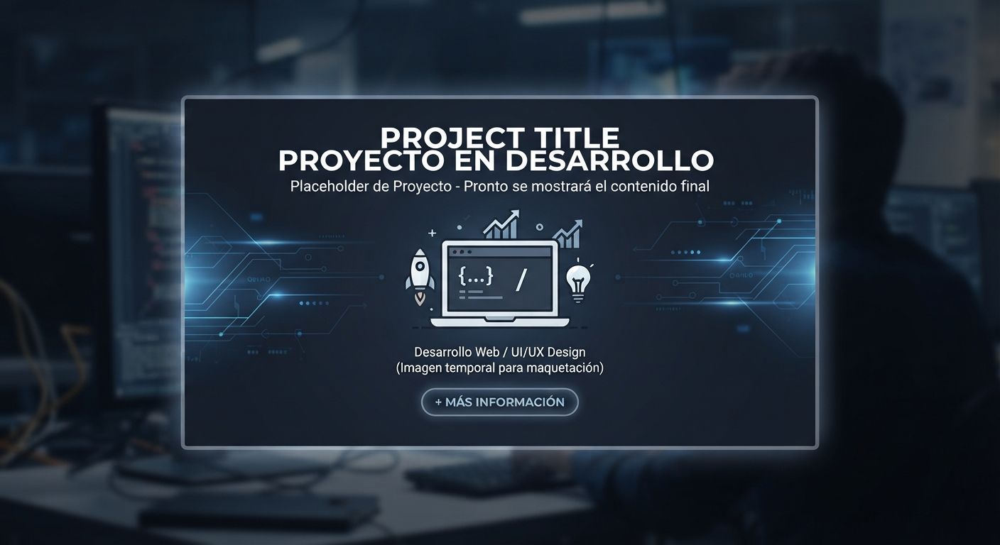

Técnicas
- [Java]
- [Spring Boot]
- [REST APIs]
- [POO]
- [SQL]
- [Bases de Datos]
- [JSON]
- [CRUD]
- [HTML]
- [CSS]
- [JavaScript]
- [Bootstrap]
- [Git]
- [GitHub]
- [Linux]
- [Redes]
- [Servidores]
- [RTMP]
- [Scrum]
- [UiPath]
- [Bizagi]
- [BPMN]
- [Soporte Técnico]
[Programadora Full Stack Java]
[frase que me hace empleable]


[Con una base sólida en Electromecánica, he evolucionado para especializarme en soluciones backend robustas]

E-commerce web que permite descubrir y adquirir kits diseñados según diferentes necesidades del usuario. La aplicación integra catálogo de productos, detalle de kits, registro e inicio de sesión, carrito de compras y funcionalidades de administración. El proyecto combina frontend y backend para gestionar productos, usuarios y operaciones del sistema, utilizando una API REST y persistencia de datos con Java, Spring Boot y MySQL.
Proyecto de modelado y automatización de procesos (end-to-end) para la gestión de solicitudes de crédito, desarrollado en Bizagi Studio y respaldado sobre SQL Server Express. Incluye el diseño del flujo BPMN 2.0, reglas de negocio y empaquetado del proyecto
E-commerce web para descubrir y adquirir kits según las necesidades del usuario: catálogo de productos, detalle de kits, registro e inicio de sesión, carrito de compras y administración. Proyecto en equipo de 5 personas bajo SCRUM, con 11 pantallas diseñadas en Figma y front end en HTML, CSS, JavaScript modular y Bootstrap; el backend con Java, Spring Boot y MySQL está planificado. Mi parte: lideré las ceremonias del Sprint 2 como Scrum Master; diseñé en Figma la vista de contáctenos, el banner y la vista de administrador, con los principios de Donald Norman; y desarrollé la página de administrador, que agrega y elimina productos y los guarda en localStorage, además del banner responsivo del catálogo para celular, tablet y escritorio.
En mi práctica como auxiliar de ingeniería en Griffith Foods actualicé los planos de funcionamiento, eléctricos y de plantas de tratamiento. Recorrí la planta para comparar lo construido con los planos madre, levanté en AutoCAD el sistema de agua caliente desde las calderas hasta el retorno y modelé en 3D el área de sellado y los mezcladores. Trabajé en paralelo con el arquitecto, cada uno a cargo de una parte, y aprendí a verificar requerimientos, a seguir un flujo de punta a punta y a identificar cada válvula y equipo. Hoy aplico lo mismo al programar: reviso requerimientos, divido el trabajo por funcionalidades en ramas de Git y sigo el flujo de los datos de principio a fin.
Estudié programación orientada a objetos y sus pilares, y practiqué con ejercicios hasta llegar a interfaces. Lo que más me costó fue el polimorfismo y la clase abstracta, y los entendí practicando mucho, investigando y viendo videos. Hoy, en Generation, esa base me permitió entender rápido el concepto de interfaces en la práctica y retomar la sintaxis de Java.
Aprendí los roles, las ceremonias, la filosofía agile, a dividir el trabajo en sprints y a llevarlo en un tablero. Hoy lo aplico en mis dos proyectos. En Kit-Box fui Scrum Master del Sprint 2: organicé el planning y las dailies, mantuve el tablero al día, revisé con el PO los requerimientos y la rúbrica, y propuse la estructura de trabajo del sprint; se cumplieron todas las entregas. En el Planificador de Tareas, que es individual, asumo todos los roles: con los sprints que define el profe armo mi tablero en GitHub Projects y trabajo cada entregable.
Aprendí modelamiento de procesos con notación BPMN y flujos de trabajo en Bizagi, donde implementé un sistema de préstamos de banco con validaciones, envío de solicitud, manejo de identidades y base de datos en SQL Server Express. En RPA trabajé con Automation Anywhere y UiPath, y como proyecto de entrega automaticé con bots la extracción de datos de un PDF, su llenado en un Excel y el envío a la base de datos. Al comparar con las métricas de lo que tardaba una persona haciéndolo a mano, la automatización aumentó la eficiencia en un 65 %.
Entré al equipo en pleno montaje de los estudios: cableé video y audio desde el estudio hasta el servidor, instalé equipos y configuré encoders con RTMP y la segmentación de redes con VLANs. Después pasé a ser líder de la tarde, a cargo de 4 estudios de juegos de casino, donde identificaba fallas, conectaba backups y cambiaba la IP cuando la red fallaba. También mapeé los escáneres de cartas en el archivo JSON, instalé los juegos y configuré sus entornos.Hoy aplico lo mismo al programar: conozco el flujo completo de los datos para ubicar dónde se rompe algo y por qué. Descarto causas según el error, como cuando revisaba en el encoder si llegaba imagen para saber si el problema estaba en la cámara, en el cableado o en el envío por RTMP.
Trabajo con un compañero del SENA, también electromecánico, en proyectos para fincas y veredas cercanas: estructuras metálicas, conexiones eléctricas de casas, porterías e instalación y configuración de cámaras de seguridad. Visitamos el sitio, tomamos medidas, hacemos el plano, calculamos el material y ambos hacemos el montaje. Primero hacemos un cálculo aproximado y luego lo revisamos con detalle, y así reduje costos en un 10 %. He levantado los requerimientos de más de 15 proyectos e instalado más de 6 sistemas de cámaras con el 100 % de cobertura.
Estoy aprendiendo a programar en Java: clases, herencia, interfaces y colecciones. El programa sigue con Spring Boot y bases de datos, que es hacia donde voy como desarrolladora backend. En paralelo trabajo el front end con HTML, CSS, JavaScript, Bootstrap, localStorage y Git en Kit-Box, un proyecto en equipo de 5. También aprendí Figma y buenas prácticas de UX con los principios de Donald Norman, que apliqué en el diseño de las pantallas del proyecto.
[Frase invitando a escribirte]